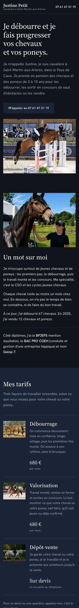
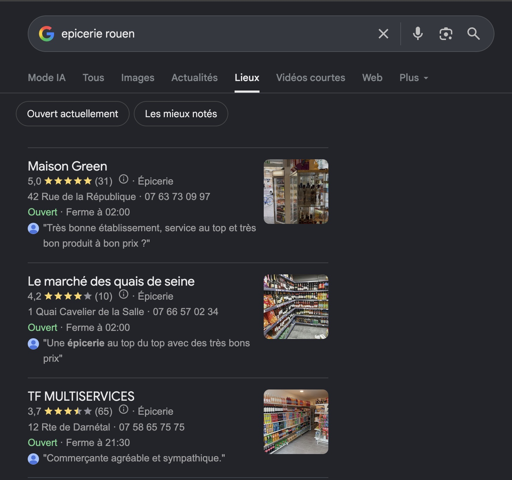

Création web
Un site à votre image.
Présentez vos prestations, vos réalisations et vos coordonnées dans un site rapide, adapté au téléphone et à votre métier.
Découvrir la création de siteJe crée des sites internet pour les commerçants, artisans et indépendants. Je travaille aussi leur référencement naturel pour les aider à gagner en visibilité sur Google, sans publicité.

Quelques entreprises accompagnées
Les Sens du HammamInstitut et spa Justine PetitCavalière Maison GreenÉpicerie en ligneUne recherche, un clic, un client : la vidéo montre comment un site bien référencé fait venir des clients, avec mes vraies réalisations.
Des solutions concrètes pour les artisans, les commerces et les indépendants : création de site, visibilité sur Google et réseaux sociaux.
Présentez vos prestations, vos réalisations et vos coordonnées dans un site rapide, adapté au téléphone et à votre métier.
Découvrir la création de site
Je travaille la structure, les textes et les éléments techniques pour aider Google à comprendre votre activité. Le référencement se construit dans le temps.
Découvrir le référencementJe prépare des contenus cohérents avec votre activité pour garder vos actualités visibles, sans y penser chaque semaine.
Découvrir les réseaux sociauxFaites glisser les cartes ou utilisez les flèches et les points.
Les premiers résultats sur Google sont souvent des annonces payées. Elles disparaissent le jour où l’on arrête de payer.
Un site bien référencé, lui, reste dans les résultats naturels et continue d’être trouvé mois après mois, sans budget d’annonces.
Une entreprise qui paie pour être là
Visible tant que le budget dure.
Votre entreprise
Trouvée grâce à son site et à sa fiche d’établissement Google.
Dites-moi en quelques lignes ce que vous faites et ce dont vous avez besoin. Je vous réponds personnellement.
martin.petit@icloud.com